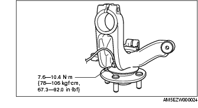
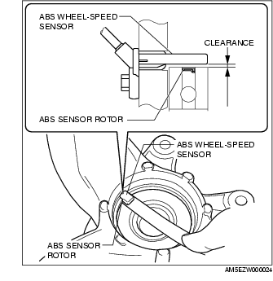

Front ABS wheel-speed sensor inspection
Sensor Output Value Inspection
- • Resistance inspection using other testers may cause damage to the ABS wheel-speed sensor internal circuit. Be sure to use the WDS or equivalent to inspect the ABS wheel-speed sensor.
1. Turn the ignition switch off.
2. Connect the WDS or equivalent to the DLC-2.

3. Select the following PIDs by WDS or equivalent.
4. Start the engine and drive the vehicle.
5. Verify that the display of the WDS or equivalent shows the same value as the speedometer.
Installation Visual Inspection
1. Inspect for the following:
- • If there is any malfunction, replace the part.
- (1) Excessive play of the ABS wheel-speed sensor
- (2) Deformation of the ABS wheel-speed sensor
Clearance Inspection
Preparation prior to inspection
1. Remove the ABS wheel-speed sensor. (See FRONT ABS WHEEL-SPEED SENSOR REMOVAL/INSTALLATION.)
2. Remove the wheel hub, steering knuckle component. (See WHEEL HUB, STEERING KNUCKLE REMOVAL/INSTALLATION.)
3. Install the ABS wheel-speed sensor to the removed wheel hub, steering knuckle component, and tighten to the specified torque.

Tightening torque
Clearance Inspection
1. Measure the gap between the ABS sensor rotor and ABS wheel-speed sensor using a feeler gauge.

Clearance
Servicing after inspection
1. Remove the ABS wheel-speed sensor from the wheel hub, steering knuckle component.
2. Install the wheel hub, steering knuckle component. (See WHEEL HUB, STEERING KNUCKLE REMOVAL/INSTALLATION.)
3. Install the ABS wheel-speed sensor. (See WHEEL HUB, STEERING KNUCKLE REMOVAL/INSTALLATION.)
4. Inspect the front wheel alignment. (See FRONT WHEEL ALIGNMENT.)